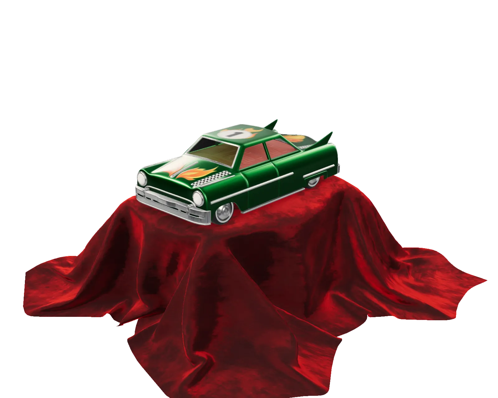

Place it in the room, at real size.
Plane detection, anchors, depth occlusion and real-world scale: ARCore on Android, ARKit on iOS, written as composables and views.
Open the AR demo
Toy Car · Guido Odendahl · CC0
Open source · Apache 2.0 · latest release
Declarative 3D and AR for Jetpack Compose, SwiftUI and the web. A scene is a view; a model is a node.
implementation("io.github.sceneview:sceneview:4.52.0")// Xcode › Add Package Dependencies
https://github.com/sceneview/sceneview.git
// Version: 4.52.0<script src="https://cdn.jsdelivr.net/gh/sceneview/sceneview@v4.52.0/website-static/js/filament/filament.js"></script>
<script src="https://cdn.jsdelivr.net/gh/sceneview/sceneview@v4.52.0/website-static/js/sceneview.js"></script>$ flutter pub add flutter_sceneview$ npm install @sceneview-sdk/react-native
$ npx pod-installimplementation("io.github.sceneview:sceneview-compose:4.52.0")KHR_materials_clearcoatKHR_materials_transmissionKHR_materials_sheenDeclarative
Pick a model: the string in the code and the scene beside it change together. In the Compose tab, drag the value of scaleToUnits and watch the model follow.
// Android · Jetpack Compose
@Composable
fun ModelScreen() {
SceneView(modifier = Modifier.fillMaxSize()) {
rememberModelInstance(modelLoader, "models/sheen_chair.glb")
?.let { instance ->
ModelNode(
modelInstance = instance,
scaleToUnits = 1.0f,
autoAnimate = true,
)
}
}
}Drag 1.0f sideways, or focus it and use the arrow keys.
// iOS · macOS · visionOS · SwiftUI
struct ModelScreen: View {
@State private var model: ModelNode?
var body: some View {
SceneView { root in
if let model { root.addChild(model.entity) }
}
.contentID(model != nil)
.environment(.studio)
.cameraControls(.orbit)
.task { model = try? await ModelNode.load("sheen_chair.usdz") }
}
}<!-- Web · Filament compiled to WebAssembly -->
<canvas id="viewer"></canvas>
<script src="…/filament/filament.js"></script>
<script src="…/sceneview.js"></script>
<script>
SceneView.modelViewer("viewer", "models/sheen_chair.glb")
</script>// Flutter · Android and iOS
final controller = SceneViewController();
SceneView(
controller: controller,
onViewCreated: () => controller.loadModel(
const ModelNode(modelPath: 'models/sheen_chair.glb'),
),
)// React Native · Android and iOS
<SceneView
style={{ flex: 1 }}
modelNodes={[{ src: 'models/sheen_chair.glb', position: [0, 0, -2] }]}
cameraControlMode="orbit"
/>What you can build
Plane detection, anchors, depth occlusion and real-world scale: ARCore on Android, ARKit on iOS, written as composables and views.
Open the AR demoglTF and GLB on Filament, USDZ on RealityKit. STL, OBJ, PLY and 3MF are converted on load.
The Cosmos demo generates a spiral galaxy in real time. No mesh file to ship.
Apple samplesViewNode renders real Compose content on a node: labels, cards and controls placed in 3D space.
Open the ViewNode demoTry every demo on your phone: Google Play · App Store · Web demo
Platforms
Native renderers underneath: Filament on Android, desktop and the web, RealityKit on Apple.
Compose Multiplatform: one SceneViewer for Android, iOS and desktop — a viewer subset, without AR. Feature matrix per platform
AI-ready
SceneView ships an MCP server and an llms.txt, so any assistant that speaks MCP reads the real API instead of guessing it.
Any MCP client · pick your assistant above for its exact setup
$ npx -y sceneview-mcpOrdered by the share of professional developers who use each tool at work, from the JetBrains Developer Ecosystem Survey 2026 (published Aug 18, 2026). Gemini is placed using the Stack Overflow pulse survey of April 2026, since JetBrains does not report it. Any MCP client works; names belong to their owners.
Any MCP client · pick your assistant above for its exact setup
$ npx -y sceneview-mcpClaude Code · terminal
$ claude mcp add sceneview -- npx -y sceneview-mcpGitHub Copilot in VS Code · .vscode/mcp.json
{"servers":{"sceneview":{"type":"stdio","command":"npx","args":["-y","sceneview-mcp"]}}}OpenAI Codex · terminal
$ codex mcp add sceneview -- npx -y sceneview-mcpCursor · .cursor/mcp.json
{"mcpServers":{"sceneview":{"command":"npx","args":["-y","sceneview-mcp"]}}}Gemini CLI and Code Assist · ~/.gemini/settings.json
{"mcpServers":{"sceneview":{"command":"npx","args":["-y","sceneview-mcp"]}}}JetBrains AI Assistant · Settings › Tools › AI Assistant › Model Context Protocol
{"mcpServers":{"sceneview":{"command":"npx","args":["-y","sceneview-mcp"]}}}OpenCode · opencode.json
{"mcp":{"sceneview":{"type":"local","command":["npx","-y","sceneview-mcp"],"enabled":true}}}Google Antigravity · mcp_config.json
{"mcpServers":{"sceneview":{"command":"npx","args":["-y","sceneview-mcp"]}}}In the open
Found in public code and posts from teams at
Each name links to that team’s own public code or post; a name here is not an endorsement. Repository count from GitHub code search, owners sceneview and ThomasGorisse excluded, checked on September 26, 2026. Stars, contributors, releases and web downloads are refreshed weekly by an automated job.
Questions
| SceneView | Unity | Filament, direct | Three.js | RealityKit | |
|---|---|---|---|---|---|
| Declarative UI | Compose, SwiftUI | No — editor and C# | No — imperative | No — imperative | SwiftUI |
| Setup | One Gradle or SwiftPM dependency | Separate engine, embedded as a library | Engine, materials and loaders wired by hand | One npm package | Part of the Apple SDKs |
| Platforms | Android stable; Apple, web, desktop, Flutter, React Native alpha | Most platforms | Android, Apple, desktop, web | Web | Apple only |
| AR | ARCore, ARKit | AR Foundation | Bring your own | WebXR | ARKit |
| Renderer | Filament, RealityKit | Unity | Filament | WebGL, WebGPU | RealityKit |
Yes. When Google archived Sceneform, the community kept it going as com.gorisse.thomas.sceneform, and SceneView grew out of that line with a Compose-first API on Filament. The migration guide covers the move from Sceneform.
SceneView is a UI library, not an engine you embed. A 3D scene is a composable or a SwiftUI view inside your existing app, with the same state, navigation and build. A game engine fits full games and editor-driven content; SceneView fits product viewers, AR placement and 3D inside an app’s own UI.
glTF and GLB, rendered by Filament on Android, desktop and the web. USDZ, rendered by RealityKit on Apple platforms. STL, OBJ, PLY and 3MF files are converted on load.
Yes. SceneView publishes an MCP server (sceneview-mcp) and an llms.txt file, so any assistant that supports the Model Context Protocol can read the current API instead of guessing it. The docs give the setup for each client.
Apache 2.0. The sample 3D models keep their own licenses, listed on the credits page.
Follow the quickstart for your platform, or open the playground and edit a live scene in the browser.
SceneView is built in the open by its contributors. If it saves you time, a donation helps keep it moving.